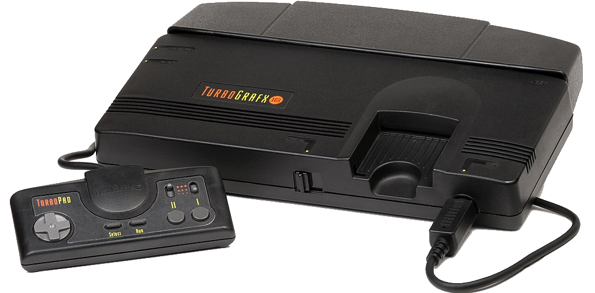

Эпоха 16-битных приставок является четвёртым поколением игровых систем, началась 30 октября 1987 года
с японского релиза NEC PC Engine (известного как TurboGrafx-16 на рынке Северной Америки).
Несколько других компаний стали обращать внимание
на созревание видео-игровой индустрии и начали строить планы на выпуск приставки в будущем.
Тем не менее, большинство приставок, за исключением Neo Geo от SNK, не были широко распространены.
Главными конкурентами в этом поколении были Sega Mega Drive и Super Nintendo Entertainment System,
а борьба за рынок между двумя крупнейшими компаниями в игровой индустрии того времени, Nintendo и Sega,
стала одной из самых значимых глав в истории видеоигр,
и заметно повлияла на интерес к электронным развлечениям у широкой публики.
Благодаря популярности игровых приставок четвёртого поколения эту эпоху часто называют
«золотым веком» игровой индустрии.
(1987—1994) 